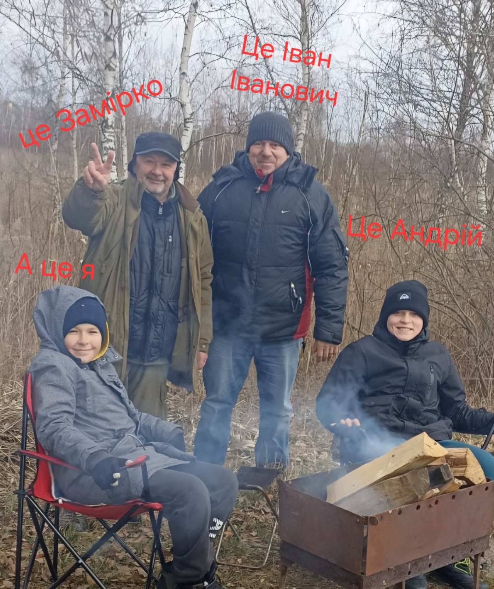
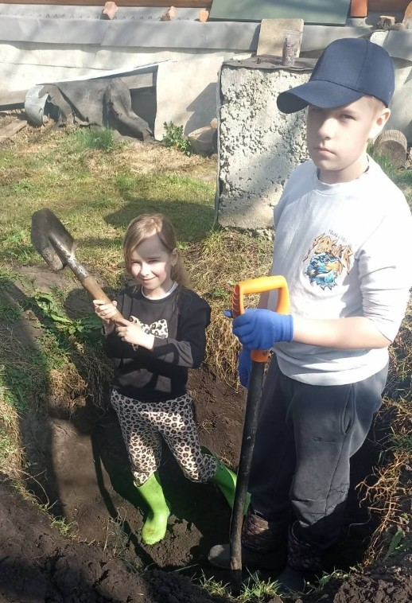
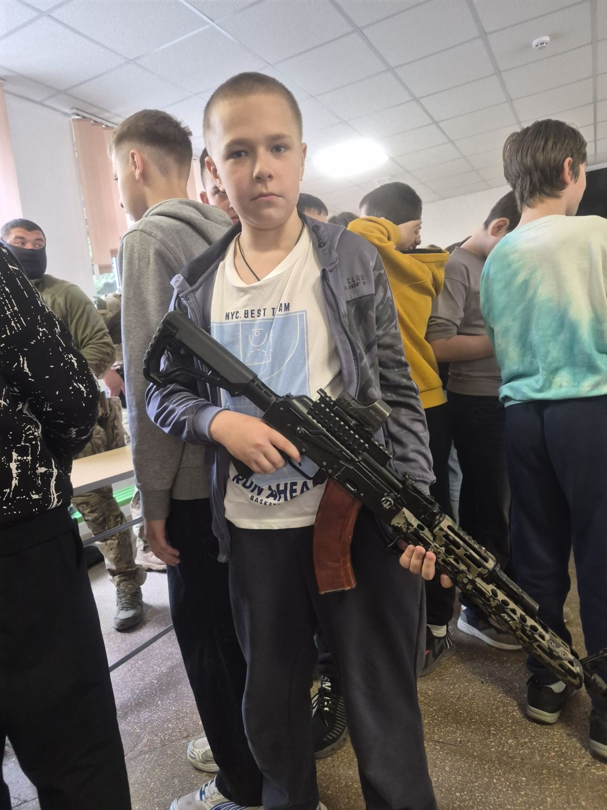

Привіт! Мене звати Дарій, мені 13 років і я навчаюся у школі міста Львова - номер 32. Я люблю малювати, садити різні рослини та дерева, але особливо я люблю - РИБОЛОВЛЮ! на риболовлю зі мною їздить дядько Саша - це товариш мого дідуся. Дядько Саша - він же ж - Замірко, ще з малечку вчив мене риболовлі і я влюбився в неї МОМЕНТАЛЬНО. На сьогоднішній день у мене є снасті які коштують понад 4000 гривень кожна і я вмію рибалити чотирма видами: поплавком, спінінгом (рибалка на хижака), карпфішинг (рибалка на мирну коропову рибу) та тролінг ( теж на хижака але в процесі їзди на лодці). Також у мого дідуся є спільний із Замірком товариш - Іван Іванович, він теж трохи вчив мене риболовлі і деякі речі відрізняються від тих яких мене вчив дядько Саша. Вони завжди по друдньому ворогують і сперечаються хто більше зловить риби. Ще у мене є найкращий друг - Андрій, ми з ним дружимо зі садочку і НІ РАЗУ не сварилися. Тепер і я його вчу риболовлі. Ще у мене є моя улюблена і єдина рідна сестра - Настя, я її дуже люблю але звичайно буває що ми сваримось, не буду казати що завжди це тільки через неї 😅. Настя теж вчиться риболовлі і я їй передаю ці знання.


